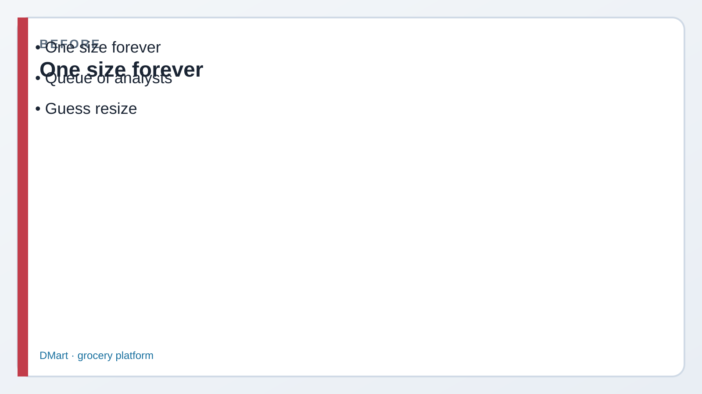
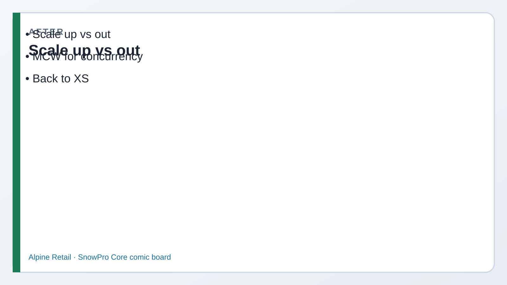

1 SHOW the lab warehouses
What this does: Confirms bootstrap created both engines. You need OPERATE to resize.
SQL · show
USE ROLE ROLE_CORE_LAB_ADMIN;
SHOW WAREHOUSES LIKE 'WH_CORE%';✓ WH_CORE_XS and WH_CORE_M listed
Lab 14 · Domain 4 · You are Priya
Read every Teach first section before you copy SQL.
Lab 13 asked whether to resize. Today you learn how: scale up (bigger size) vs scale out (more clusters),
plus auto-suspend/resume and statement timeout. Always leave class on cheap WH_CORE_XS.
Picture first. Look at BEFORE/AFTER → read the comic → then run tiny SQL. If a paragraph feels heavy, skip to the next comic strip — Dev explains it out loud for you.
WH_CORE_M resize (scale up), name multi-cluster (scale out, Enterprise+), tune
AUTO_SUSPEND / AUTO_RESUME, set a statement timeout, then shrink and suspend so you don’t burn credits.


Episode 14 · Start here
One query takes forever. Make the warehouse Medium.
My problem is fifty short queries waiting in line. That’s scale out — more clusters of the same size — not always a bigger single engine.
Dev’s rule: complexity/spill → up. Queues/concurrency → out (MCW).
XS → S → M → … More CPU/memory per cluster for heavy queries.
ALTER WAREHOUSE … SET WAREHOUSE_SIZE = 'MEDIUM'Add clusters (Enterprise+) so concurrent queries don’t queue as hard.
MIN_CLUSTER_COUNT / MAX_CLUSTER_COUNTSuspend after idle seconds; resume on next query. Idle burn = forgot suspend.
AUTO_SUSPEND = 60 on lab WHsKill runaway statements after N seconds so one query can’t burn the day.
STATEMENT_TIMEOUT_IN_SECONDSBefore Step 1
Trial credits aren’t infinite. If you CREATE OR REPLACE a huge warehouse and walk away, that’s on you.
Got it — demo onWH_CORE_M, then set size back down, SUSPEND, andUSE WAREHOUSE WH_CORE_XS.
What this does: Confirms bootstrap created both engines. You need OPERATE to resize.
USE ROLE ROLE_CORE_LAB_ADMIN;
SHOW WAREHOUSES LIKE 'WH_CORE%';Before Step 2
If I resize mid-day, do I kick everyone off?
Resize is online. Running queries finish on the old servers; new queries pick up the new size. Exam loves that phrase.
What this does: Brief Medium demo + timeout setting. Immediately return size toward cheap and suspend.
USE WAREHOUSE WH_CORE_M;
ALTER WAREHOUSE WH_CORE_M SET WAREHOUSE_SIZE = 'MEDIUM';
ALTER WAREHOUSE WH_CORE_M SET AUTO_SUSPEND = 60;
ALTER WAREHOUSE WH_CORE_M SET AUTO_RESUME = TRUE;
ALTER WAREHOUSE WH_CORE_M SET STATEMENT_TIMEOUT_IN_SECONDS = 3600;
SELECT CURRENT_WAREHOUSE();ALTER WAREHOUSE WH_CORE_M SET WAREHOUSE_SIZE = 'XSMALL';
ALTER WAREHOUSE WH_CORE_M SUSPEND;
USE WAREHOUSE WH_CORE_XS;
SELECT CURRENT_WAREHOUSE();What this does: You may not be able to enable MCW on Standard trial — still memorize MIN/MAX clusters and scaling policy for the exam.
-- Enterprise+ multi-cluster (scale OUT):
-- ALTER WAREHOUSE WH_CORE_M SET
-- MIN_CLUSTER_COUNT = 1
-- MAX_CLUSTER_COUNT = 3
-- SCALING_POLICY = 'STANDARD';
--
-- STANDARD vs ECONOMY scaling policy = how eagerly new clusters spin up.Say: Many queued short queries → scale OUT (multi-cluster). One heavy query spilling/CPU-bound → scale UP (larger size). Don’t swap them.
Say: The floor and ceiling of how many same-size clusters a multi-cluster warehouse may run under load. Credits scale with active clusters.
Say: AUTO_SUSPEND after a short idle period, AUTO_RESUME for the next query. Leaving a large WH running with no suspend is the classic FinOps fail.
Say: Yes. In-flight queries complete on current servers; new queries use the new size. You don’t need an outage window for a resize.
Say: X-Small + 60s suspend is enough for teaching queries and minimizes accidental credit burn. Use Medium only for deliberate demos, then shrink/suspend.